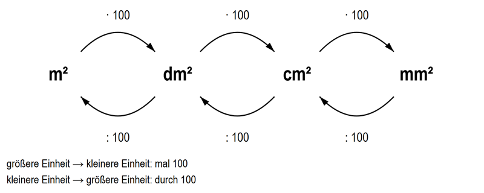
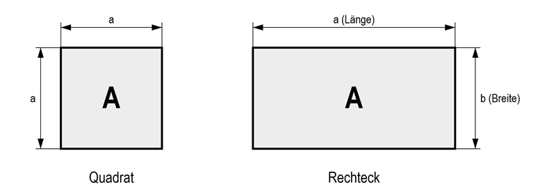
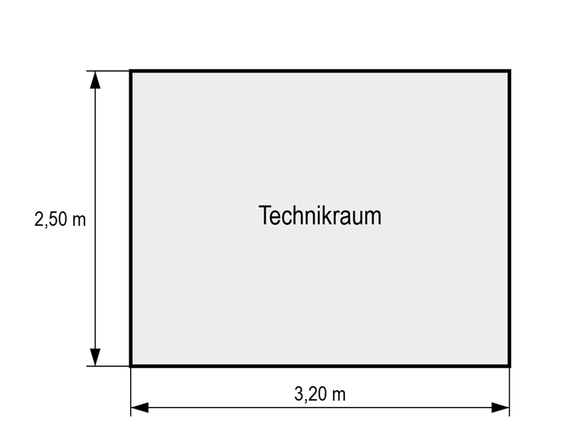
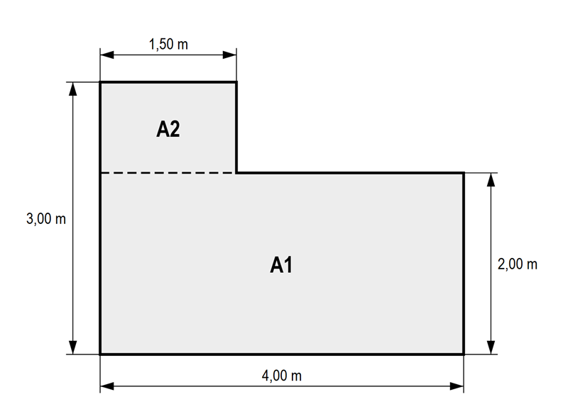
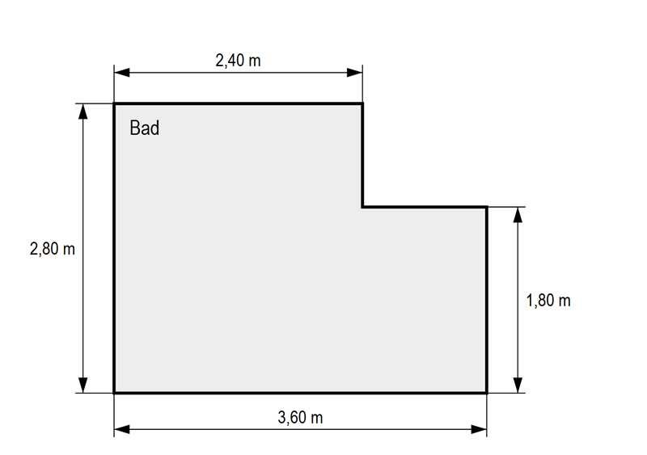
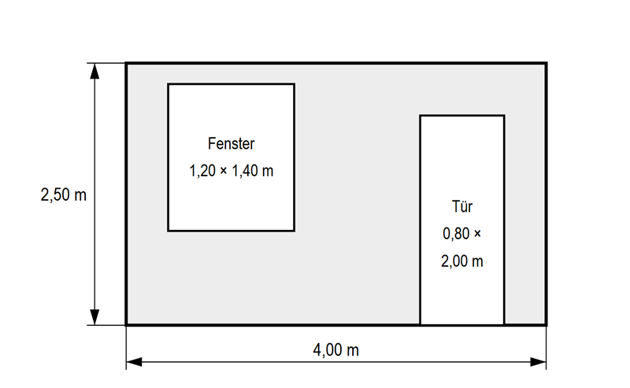
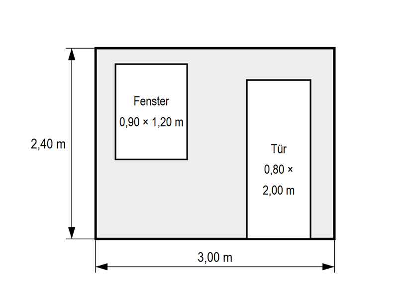
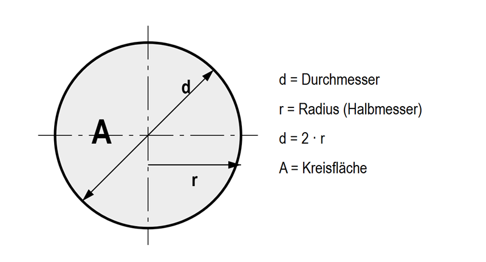
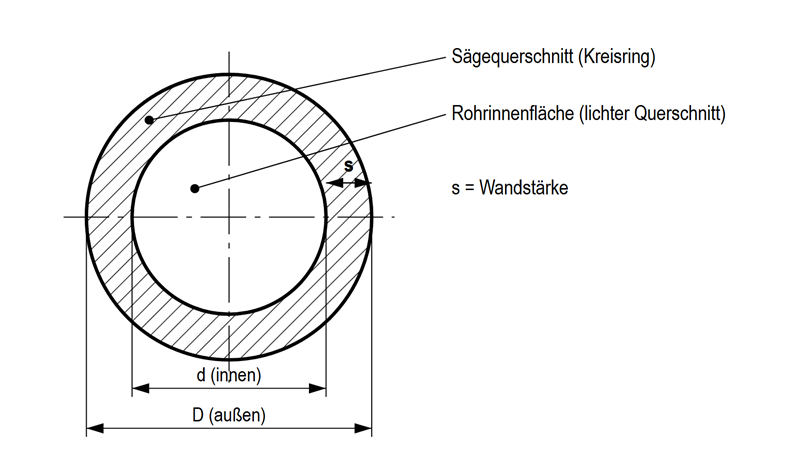
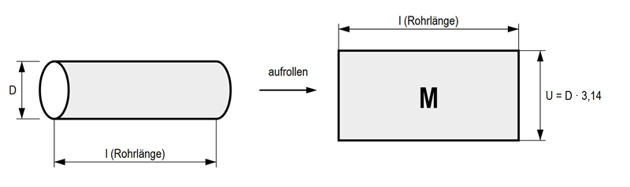

Flächen
Heute lernst du: wie du Flächen umrechnest, wie groß ein Raum, eine Wand, ein Loch oder ein Rohrquerschnitt ist, und wie viel Fläche ein Rohr außen hat.
So arbeitest du: Lies zuerst den grauen Infokasten. Mach dann die Aufgaben darunter. Die Antworten findest du im Infokasten. Fertig? Tippe bei jeder Aufgabe auf „Prüfen“. Bessere deine Fehler aus.
Die Kästen mit Strichellinie und ★★★ („Mehr wissen“ und „Vertiefung“) sind erweiterte Aufgabenstellungen.
Du brauchst: Taschenrechner. Wir rechnen mit π = 3,14. Schreib bei jeder Zahl die Einheit dazu.
Runden: Runde auf 2 Kommastellen. Rechne mit dem gerundeten Ergebnis weiter. Das Zeichen ≈ heißt „ungefähr gleich“ (gerundet).
Infokasten A: Wie rechnest du Flächen um? (Flächeneinheiten)
|
Eine Fläche misst man in Quadratmeter (m²), Quadratdezimeter (dm²), Quadratzentimeter (cm²) und Quadratmillimeter (mm²). 1 m² ist ein Quadrat mit 1 m mal 1 m. 1 m = 10 dm. Darum passen 10 · 10 = 100 kleine Quadrate mit 1 dm² hinein. Also: 1 m² = 100 dm².  Stellentafel: Jede Einheit hat 2 Kästchen. In jedes Kästchen kommt eine Ziffer. Das Komma steht immer rechts von der Einheit, die du hinschreibst.
Beispiele: 2,5 m² = 250 dm² | 350 cm² = 3,5 dm² | 1 m² = 10 000 cm² Merke: Bei Flächen ist der Schritt von einer Einheit zur nächsten immer 100. | ||||||||||||||||||||||||||||||
Aufgabe 1 ★ leicht – Die Stellentafel
Lies Infokasten A. Tipp die Ziffern in die Stellentafel. Tipp dann das Ergebnis ein (nur die Zahl, die Einheit steht schon da).
| Verwandle | m² | dm² | cm² | mm² | Ergebnis | ||||
|---|---|---|---|---|---|---|---|---|---|
| a) 3,5 m² → dm² | dm² | ||||||||
| b) 8,25 cm² → mm² | mm² | ||||||||
| c) 2400 cm² → m² | m² | ||||||||
Aufgabe 2 ★ leicht – Umrechnen
Lies Infokasten A. Rechne um. Tipp: große Einheit → kleine Einheit: mal 100. Kleine Einheit → große Einheit: durch 100. Tipp nur die Zahl ein.
| a) 1,8 m² = | dm² | |
| b) 4,5 dm² = | cm² | |
| c) 600 cm² = | dm² | |
| d) 25 000 cm² = | m² | |
| e) 0,75 m² = | cm² | |
| f) 3500 mm² = | cm² |
Aufgabe 3 ★★ mittel – Fehler finden
Ein Lehrling hat umgerechnet. Nicht alles stimmt.
Kreuze an: richtig (R) oder falsch (F). Ist es falsch, tipp das richtige Ergebnis ein (nur die Zahl). Ist es richtig, lass das Feld leer.
| Rechnung vom Lehrling | R | F | richtig ist |
|---|---|---|---|
| 2 m² = 20 dm² | dm² | ||
| 500 cm² = 5 dm² | |||
| 3 dm² = 300 cm² | |||
| 1,2 m² = 12 dm² | dm² |
Welchen Fehler hat der Lehrling gemacht? Kreuze an.
| Er hat mit 1000 gerechnet statt mit 100. | |
| Er hat mit 10 gerechnet statt mit 100. | |
| Er hat durch 100 gerechnet statt mal 100. |
Infokasten B: Wie groß ist ein Raum? (Quadrat und Rechteck)
|

Beispiel: Ein Raum ist 4,00 m lang und 3,00 m breit. A = 4,00 m · 3,00 m = 12,00 m² U = 2 · 4,00 m + 2 · 3,00 m = 14,00 m Rückwärts: Du kennst die Fläche und eine Seite? Dann rechnest du: b = A : a Beispiel: A = 12 m², a = 4 m → b = 12 m² : 4 m = 3 m Achtung: Beide Maße müssen die gleiche Einheit haben. m · m = m², cm · cm = cm². Merke: Fläche = Länge mal Breite. Rechne vorher beide Maße in die gleiche Einheit um. |
Aufgabe 4 ★ leicht – Der Technikraum
Im Technikraum soll eine neue Fußbodenheizung hinein. Der Chef braucht die Fläche und den Umfang. Den Umfang braucht er für den Randdämmstreifen (ein Dämmstreifen, der unten rundherum an der Wand liegt).

Lies Infokasten B. Rechne die Fläche A und den Umfang U. Tipp nur das Ergebnis ein.
| A = | m² | |
| U = | m |
Aufgabe 5 ★★ mittel – Achtung, Einheiten!
a) Eine Duschtasse ist 90 cm lang und 0,80 m breit.
Rechne zuerst die Breite in cm um. Rechne dann die Fläche in cm² und in m². Tipp nur die Zahlen ein.
| Breite in cm = | cm | |
| A = | cm² | |
| A in m² = | m² |
b) Ein Fußboden hat 15 m². Der Raum ist 5 m lang.
Wie breit ist der Raum? Lies im Infokasten B bei „Rückwärts“ nach.
| b = | m |
Infokasten C: Der Raum hat eine Ecke (zusammengesetzte Fläche)
|
Viele Räume sind kein Rechteck. Dann zerlegst du die Fläche in Rechtecke. Dafür zeichnest du eine Strichellinie (– – –) hinein.  So rechnest du: 1. Zeichne eine Trennlinie. So entstehen zwei Rechtecke A1 und A2. 2. Such für jedes Rechteck Länge und Breite. Fehlt ein Maß, rechnest du es aus (hier: 3,00 m − 2,00 m = 1,00 m). 3. Rechne A1 und A2. Zähl dann zusammen. Beispiel: A1 = 4,00 m · 2,00 m = 8,00 m² A2 = 1,50 m · 1,00 m = 1,50 m² A = 8,00 m² + 1,50 m² = 9,50 m² Merke: Eine schwierige Fläche zerlegst du in Rechtecke und zählst sie zusammen. |
Aufgabe 6 ★★ mittel – Das Bad zerlegen
Im Bad kommt eine Fußbodenheizung. Dein Chef braucht die Fläche.

Lies Infokasten C. Zerlege die Fläche im Kopf in zwei Rechtecke. Ein Maß fehlt: Rechne es aus. Rechne dann die ganze Fläche A. Tipp nur die Zahlen ein.
| fehlendes Maß = | m | |
| A = | m² |
Infokasten D: Wie groß ist die Wand? (Nettofläche)
|
Bei einer Wand rechnest du zuerst die ganze Wand (Rechteck). Dann ziehst du alles ab, was keine Wand ist: Fenster und Tür. Was übrig bleibt, heißt Nettofläche. Das brauchst du zum Beispiel für Fliesen, Dämmung oder eine Vorwand.  Beispiel: Wand: 4,00 m · 2,50 m = 10,00 m² Fenster: 1,20 m · 1,40 m = 1,68 m² Tür: 0,80 m · 2,00 m = 1,60 m² Nettofläche = 10,00 m² − 1,68 m² − 1,60 m² = 6,72 m² Merke: Wandfläche minus Fenster minus Tür ergibt die Nettofläche. |
Aufgabe 7 ★★ mittel – Die Badwand
Die Badwand wird gefliest. Der Fliesenleger fragt dich, wie viel Fläche es ist.

a) Lies Infokasten D. Rechne die Nettofläche in Schritten. Tipp nur die Zahlen ein.
| Wand = | m² | |
| Fenster = | m² | |
| Tür = | m² | |
| Nettofläche = | m² |
b) Warum ziehst du Fenster und Tür ab? Kreuze an.
| Weil dort keine Fliesen hinkommen. | |
| Weil Fenster und Tür schwerer sind als die Wand. | |
| Weil man die Wand sonst zweimal fliest. |
Infokasten E: Wie groß ist ein Loch? (Kreis)
|
 A = d · d · 3,14 : 4 U = d · 3,14 Am Rohr kannst du den Durchmesser messen (zum Beispiel mit der Schieblehre). Den Radius kannst du nicht direkt messen. Darum rechnen wir mit d. Beispiel: Kreis mit d = 20 cm A = 20 cm · 20 cm · 3,14 : 4 = 314 cm² U = 20 cm · 3,14 = 62,8 cm Merke: Beim Kreis rechnen wir immer mit dem Durchmesser d. |
Aufgabe 8 ★ leicht – Durchmesser und Radius
Lies Infokasten E. Ergänze. Tipp nur die Zahlen ein.
| a) d = 30 cm → r = | cm | |
| b) r = 4 cm → d = | cm |
c) Ein Deckel hat d = 40 cm. Rechne die Fläche A und den Umfang U.
| A = | cm² | |
| U = | cm |
Aufgabe 9 ★★ mittel – Die Kernbohrung
Für ein Abwasserrohr bohrt ihr ein rundes Loch durch die Wand (Kernbohrung). Das Loch hat d = 12 cm.
Wie groß ist das Loch? Rechne die Fläche in cm². Runde auf 2 Kommastellen. Tipp nur die Zahl ein.
| A = | cm² |
Ein Kollege rechnet: A = 12 cm · 3,14 = 37,68 cm². Was hat er gerechnet? Kreuze an.
| die Fläche | den Umfang | den Radius |
Infokasten F: Wie groß ist der Querschnitt vom Rohr? (Kreisring)
|
Schneidest du ein Rohr ab, siehst du einen Ring. Diese Fläche heißt Kreisring oder Sägequerschnitt (die Fläche, die die Säge durchschneidet). Innen ist die Rohrinnenfläche (lichter Querschnitt). Dort fließt das Wasser.  • D = Außendurchmesser • d = Innendurchmesser • s = Wandstärke • d = D − 2 · s • s = (D − d) : 2 So rechnest du den Kreisring: Große Kreisfläche (mit D) minus kleine Kreisfläche (mit d). A = D · D · 3,14 : 4 − d · d · 3,14 : 4 Beispiel: Rohr mit D = 50 mm und d = 40 mm s = (50 mm − 40 mm) : 2 = 5 mm große Fläche (D): 50 mm · 50 mm · 3,14 : 4 = 1962,5 mm² kleine Fläche (d) = Rohrinnenfläche: 40 mm · 40 mm · 3,14 : 4 = 1256 mm² Kreisring = 1962,5 mm² − 1256 mm² = 706,5 mm² Merke: Kreisring = große Kreisfläche minus kleine Kreisfläche. |
Aufgabe 10 ★★ mittel – Gewinderohr DN 32
Ein Gewinderohr DN 32 (mittelschwer) hat D = 42,4 mm und d = 35,9 mm.
Lies Infokasten F. Rechne in Schritten. Runde auf 2 Kommastellen und rechne mit den gerundeten Werten weiter. Tipp nur die Zahlen ein.
| a) Wandstärke s = | mm | |
| b) große Fläche (D) = | mm² | |
| c) Rohrinnenfläche (d) = | mm² | |
| d) Kreisring = | mm² |
Aufgabe 11 ★★ mittel – Zeichne den Sägequerschnitt
Ein Kunststoffrohr KELEN 63 x 10,5 hat D = 63 mm und s = 10,5 mm.
a) Rechne den Innendurchmesser d. Tipp nur die Zahl ein.
| d = | mm |
Infokasten G: Wie viel Fläche hat ein Rohr außen? (Rohrmantel)
|
Die Fläche außen am Rohr heißt Mantelfläche M. Du brauchst sie zum Beispiel zum Streichen (Rostschutz) oder zum Einwickeln. Stell dir vor: Du schneidest das Rohr der Länge nach auf und rollst es flach auf. Dann hast du ein Rechteck. Die eine Seite ist die Rohrlänge l. Die andere Seite ist der Umfang U = D · 3,14.  M = D · 3,14 · l Rechne D und l vorher in m um. Dann bekommst du M in m². Beispiel: Rohr D = 60 mm, Länge l = 6 m D = 60 mm = 0,06 m U = 0,06 m · 3,14 = 0,1884 m U = 0,1884 m ≈ 0,19 m (gerundet) M = 0,19 m · 6 m = 1,14 m² Merke: Mantelfläche = Umfang mal Rohrlänge. |
Aufgabe 12 ★★ mittel – Rostschutz streichen
Ein Stahlrohr DN 50 hat außen D = 60,3 mm. Du streichst eine ganze Stange (6 m) mit Rostschutzfarbe.
Lies Infokasten G. Wie viel Fläche streichst du? Rechne in Schritten. Runde U auf 2 Kommastellen. Tipp nur die Zahlen ein.
| D in m = | m | |
| U = | m | |
| M = | m² |
Mehr wissen ★★★
|
1. Rückwärts rechnen beim Kreis: Du kennst die Fläche A und suchst den Durchmesser d. d = √(A · 4 : 3,14) (√ = Wurzel. Taschenrechner: zuerst A · 4 : 3,14 rechnen, dann die Taste √ drücken.) Beispiel: A = 314 cm² → 314 · 4 : 3,14 = 400 → √400 = 20 cm 2. Kurze Formel für den Kreisring: A = 3,14 : 4 · (D · D − d · d). Das Ergebnis ist gleich. 3. Blindflansch (runde Platte, die eine Leitung am Ende verschließt): Kreisfläche minus alle Bohrungen für die Schrauben. Das ist die Nettofläche. 4. Rohr für die Fußbodenheizung: Die Heizungsrohre liegen in Schleifen im Boden. Der Abstand von Rohr zu Rohr heißt Verlegeabstand VA. So viel Rohr brauchst du ungefähr: Rohrlänge = Fläche : Verlegeabstand (beides in m) Beispiel: 12 m² Fläche, VA = 15 cm = 0,15 m → 12 m² : 0,15 m = 80 m Rohr |
Aufgabe 13 ★★★ schwer – Vertiefung
|
a) Ein runder Schachtdeckel hat A = 2826 cm². Wie groß ist sein Durchmesser d? Tipp nur die Zahl ein.
b) Ein Blindflansch hat D = 160 mm. Er hat 4 Bohrungen mit je d = 18 mm. Rechne die Nettofläche.
c) Ein Wohnzimmer ist 4,50 m lang und 4,00 m breit. Die Fußbodenheizung hat VA = 15 cm. Wie viel Rohr brauchst du?
d) Ein altes Heizungsrohr hat innen d = 27,2 mm. Innen ist rundherum 3 mm Kalk. Wie viel Prozent vom Querschnitt sind noch frei? Runde auf 2 Kommastellen.
|
Aufgabe 14 ★★ mittel – Fachbegriffe
Fachbegriffe sind die Wörter, die man auf der Baustelle verwendet.
Welcher Fachbegriff passt zur Erklärung? Tipp den Buchstaben in das Feld.
Diese Fachbegriffe gibt es: A Durchmesser – B Kreisring – C lichter Querschnitt – D Mantelfläche – E Nettofläche – F Quadratmeter – G Radius – H Stellentafel – I Umfang – J Volumen – K Wandstärke – L z-Maß
Achtung: 2 Fachbegriffe bleiben übrig. Tipp: Lies die Infokästen A bis G.
| Erklärung | Buchstabe |
|---|---|
| Länge einmal rund um die Fläche herum. | |
| Abstand vom Mittelpunkt bis zum Rand vom Kreis. Halb so groß wie d. | |
| Strecke quer durch den Kreis, durch den Mittelpunkt. Am Rohr messbar. | |
| Fläche zwischen einem großen und einem kleinen Kreis. Beim Rohr ist das der Sägequerschnitt. | |
| Tabelle zum Umrechnen von Flächen. Jede Einheit hat 2 Kästchen. | |
| Fläche innen im Rohr. Dort fließt das Wasser. | |
| Fläche außen am Rohr. M = D · 3,14 · l | |
| Fläche von einem Quadrat mit 1 m mal 1 m (m²). | |
| Wie dick die Rohrwand ist: s = (D − d) : 2 | |
| Wandfläche minus Fenster und Tür. |
Aufgabe 15 ★★★ schwer – Fachbegriffe auf Englisch
Wie heißt der Fachbegriff auf Englisch? Tipp den Buchstaben vom englischen Wort in das Feld.
Diese Wörter gibt es: A area – B circle – C circumference – D diameter – E floor – F length – G radius – H rectangle – I square – J square metre – K volume – L wall
Achtung: 2 Wörter bleiben übrig.
| Deutsch | Englisch | Deutsch | Englisch |
|---|---|---|---|
| Fläche | Rechteck | ||
| Kreis | Quadrat | ||
| Durchmesser | Wand | ||
| Radius | Fußboden | ||
| Kreisumfang | Quadratmeter |
Fertig? Tippe bei jeder Aufgabe auf „Prüfen“. Bessere deine Fehler aus.